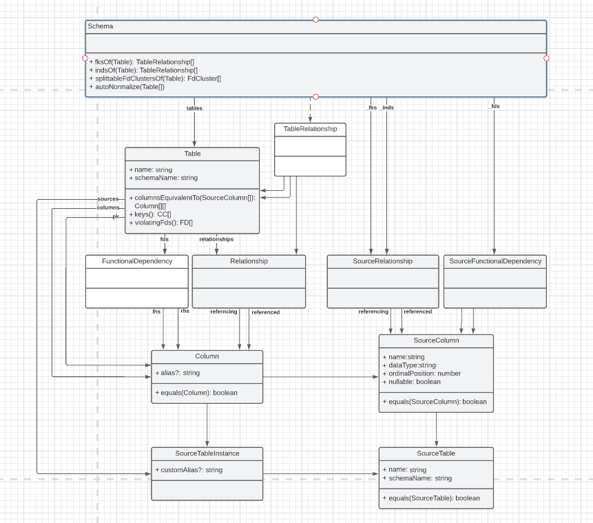

Documentation of BCNFStar
Architecture
BCNFStar consists of four components: an Angular frontend, an Express server, a database and Metanome. The frontend allows a user to load a schema via a data connection (postgres, mssql and sqledge possible). Functional dependencies and inclusion dependencies are calculated for the tables of the schema. Using this relationship, BCNFStar makes suggestions about schema transformations that a user can select in a graphical user interface. The application communicates with the database and Metanome to load schema information, functional dependencies and inclusion dependencies. This communication is handled by the server using API requests. The calculation of functional dependencies and inclusion dependencies is performed by Metanome, a Java program that combines numerous power-efficient and well-scalable algorithms for data profiling on large datasets.

Model
After a schema is loaded into BCNFStar, it is represented using a model. The model has classes for all needed entities, such as schema, table and column. All the performed schema transformations are executed on it. A partially simplified class diagram can be found bellow:
Development Documentation
User documentation
Janina Adamcic, Marie Fischer, Christop Kirchherr, Paul Rößler, Paul Sieben, Tobias Sträubig